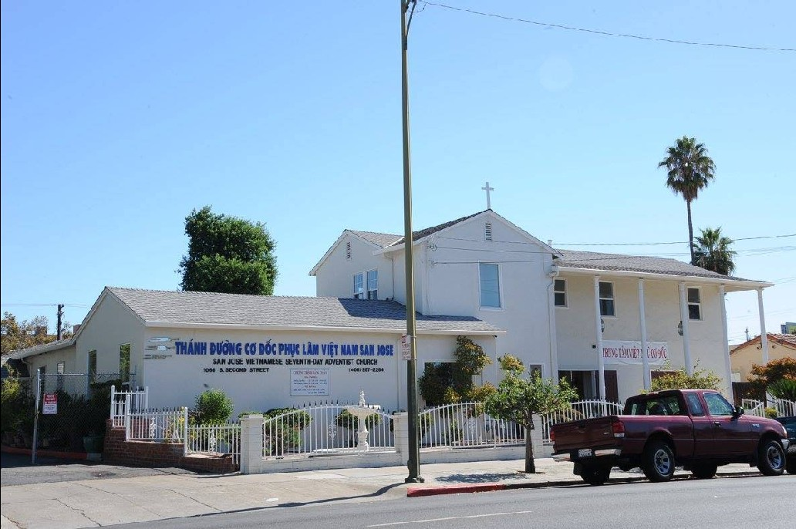
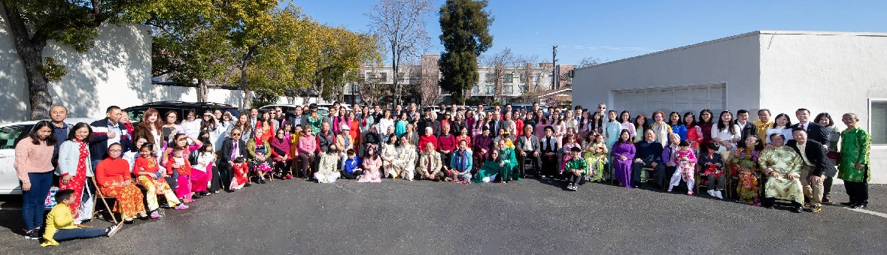

San Jose Vietnamese Seventh-day Adventist Church
Join us every Sabbath as we gather to worship, grow in God's Word, and serve one another with love.

Join Us
We gather every Saturday to worship, study God's Word, and fellowship together. All are welcome.
Saturday, 9:00 – 11:00 AM
Vietnamese-language worship service with praise, prayer, and a message from God's Word. All are welcome.
Saturday, 11:00 – 11:45 AM
Interactive Bible study with separate English and Vietnamese groups. Dive deeper into Scripture in a welcoming, discussion-based setting.
Saturday, 11:45 AM – 1:00 PM
English-language worship service featuring praise, prayer, and an inspiring message. Everyone is welcome to join.
Saturday, 1:00 – 2:00 PM
Stay for a shared meal and fellowship after the English service. Everyone is welcome to bring a dish and enjoy community.
Senior Pastor
Welcome to our church family. We believe God has a beautiful plan for your life, and we would be honored to walk alongside you in your faith journey. Come as you are — you belong here.
What's Happening
After Worship Service
Join us for a community potluck with traditional Vietnamese dishes and fellowship. Everyone is welcome to bring a dish to share.
9:00 AM — Fellowship Hall
Registration opens for our annual summer youth Bible camp. Ages 12-18. Early bird discount available.
10:00 AM — Church Grounds
Free health screenings, wellness workshops, and healthy cooking demos. Open to the entire community.
During Worship Service
A special Sabbath celebrating new members through baptism. Contact Pastor to learn about baptism preparation.
Listen & Watch
Missed a Sabbath? Catch up on recent messages and be encouraged in your walk with God.
June 21, 2026
Pastor Toan Quach — 1 John 1:5-10
June 14, 2026
Pastor Toan Quach — Hebrews 4:1-11
June 7, 2026
Pastor Toan Quach — Matthew 17:14-21
"Come to me, all you who are weary and burdened, and I will give you rest."— Matthew 11:28, NIV
Get in Touch
Whether you have questions, need prayer, or want to learn more about our church, we're here for you.
Address
1066 S Second St, San Jose, CA 95112
Phone
(408) 287-2286
sanjosechurch.sda@gmail.com
Service Times
Vietnamese Service: Sat 9:00 – 11:00 AM
Sabbath School: Sat 11:00 – 11:45 AM
English Service: Sat 11:45 AM – 1:00 PM
Potluck: Sat 1:00 – 2:00 PM
Google Maps embed placeholder
Replace with your Google Maps iframe